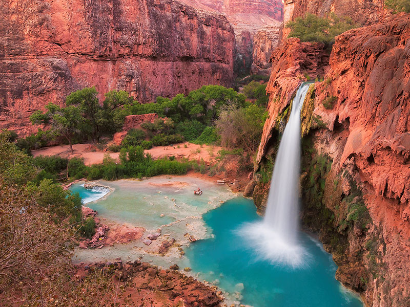
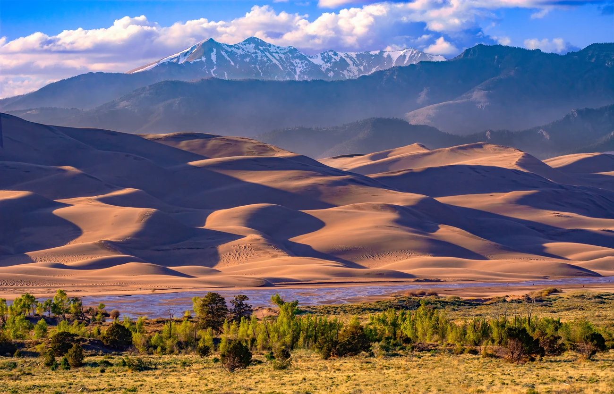
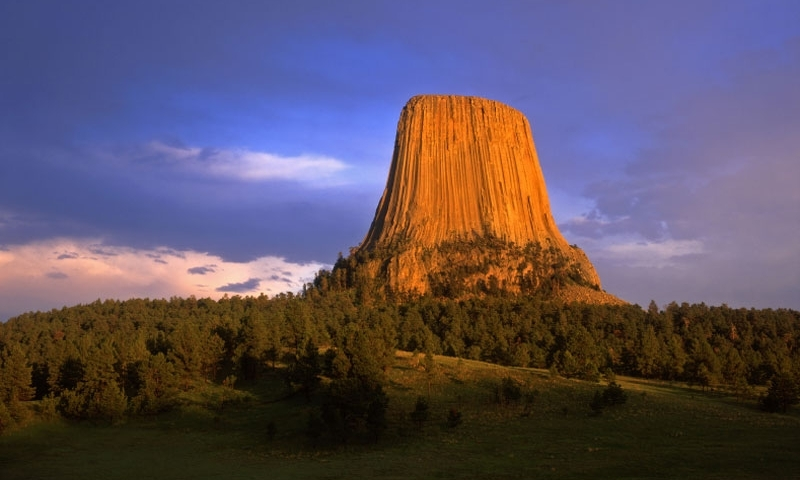
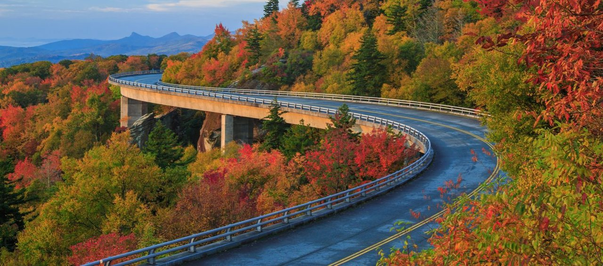
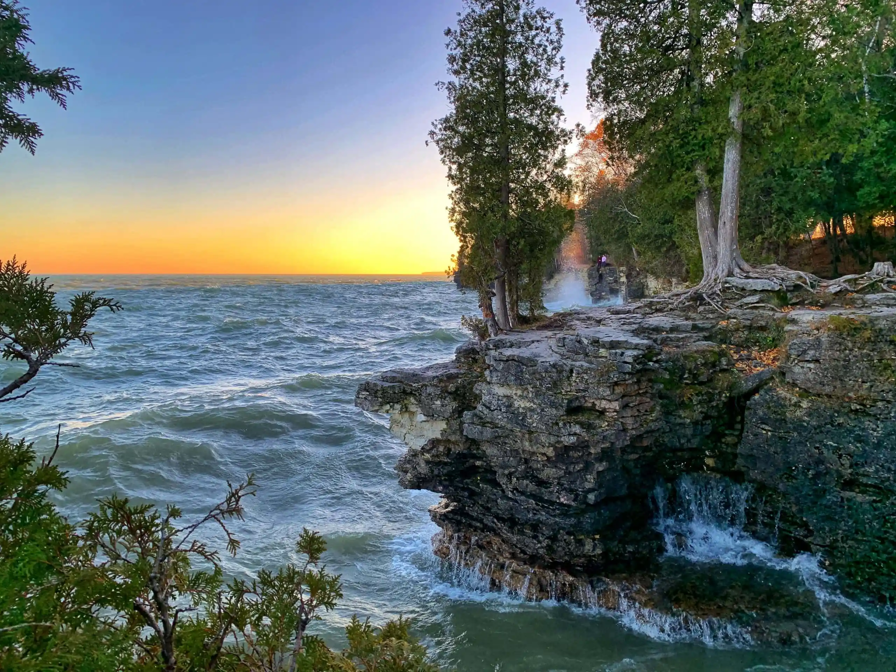

Hidden Gems in the USA
Discover amazing places beyond the usual tourist attractions
Explore Unique Destinations
The United States is full of beautiful hidden locations that many travelers overlook. From scenic drives to natural wonders, these hidden gems offer unforgettable road trip experiences away from crowded tourist spots.

Havasu Falls, Arizona
Famous for its bright turquoise waterfalls and breathtaking canyon views, Havasu Falls is one of the most beautiful hidden destinations in the USA. Visitors can hike, camp, and enjoy nature away from busy cities.

Great Sand Dunes, Colorado
This national park features giant sand dunes surrounded by mountains. It is perfect for hiking, sandboarding, and photography during sunrise or sunset.

Devils Tower, Wyoming
Devils Tower is a massive rock formation rising high above the landscape. It is a peaceful destination for hiking, sightseeing, and outdoor adventures.

Blue Ridge Parkway
Known as one of the most scenic drives in America, the Blue Ridge Parkway offers stunning mountain views, especially during the fall season.

Door County, Wisconsin
Door County is known for its lakeside towns, lighthouses, and relaxing atmosphere. It is a perfect road trip destination for families and couples.

Sedona, Arizona
Sedona is famous for its red rock landscapes, hiking trails, and peaceful desert scenery. It is an excellent place for adventure and relaxation.